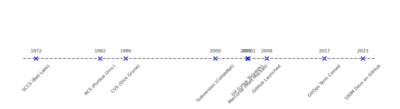

History
Historical Evolution of Version Control Systems

- 1972: Source Code Control System (SCCS) – one of the first version control systems, developed at Bell Labs, which introduced the basic idea of tracking changes (initially used on IBM mainframes).
- 1982: Revision Control System (RCS) – released by Walter Tichy at Purdue University, RCS automated change tracking for individual files using delta storage (storing differences between f ile versions). RCS was a local VCS (no network support), handling one file at a time.
- 1986: Concurrent Versions System (CVS) – developed by Dick Grune as a front-end to RCS, CVS allowed collaboration on whole projects with a client-server model. It added networked repositories and concurrent multi-developer capabilities to RCS. CVS became widely used in the 1990s for open-source and commercial projects, despite limitations (e.g. non-atomic commits and tricky branching).
- 2000: Subversion (SVN) – created by CollabNet as a successor to CVS, Subversion improved on CVS’s weaknesses. SVN introduced atomic commits (all-or-nothing changesets), better handling of file renames, and more efficient network operations. By ~2006, SVN had become one of the most popular VCS tools, addressing many of CVS’s shortcomings. SVN was still centralized: a single repository stored the code, and developers committed to that central server.
- 2005: Git and Mercurial – a breakthrough year for version control. In 2005, after the Linux kernel’s commercial VCS (BitKeeper) license was revoked, Linus Torvalds created Git as a new distributed VCS for the kernel. Around the same time, Matt Mackall released Mercurial. Both Git and Mercurial are distributed version control systems (DVCS), meaning every user has a full copy of the repository. Git quickly became the dominant VCS of the two – by 2019 it was estimated to have ~80% market share vs. ~2% for Mercurial. (We’ll discuss distributed vs. centralized concepts more in a moment.)
- 2008: GitHub launched – GitHub provided a web-based collaboration platform on top of Git. It made sharing code and participating in projects easier with features like pull requests, issue tracking, and social networking for developers. GitHub (and later similar services like Bitbucket and GitLab) greatly accelerated Git’s adoption across the industry.
- 2010s: Wide adoption of Git and migration from older systems – Throughout the 2010s, many teams and open-source projects migrated from CVS, SVN, or other tools to Git. Even companies that had used centralized systems (like Microsoft’s TFS or Perforce) moved toward Git-based workflows. Distributed version control became the new standard for most software development.
- Late 2010s: GitOps and modern practices – In 2017, the term GitOps was introduced by Weaveworks, highlighting an approach to use Git repositories as the single source of truth for infrastructure and deployments (more on this later). Integration of VCS with Continuous Integration/Continuous Delivery (CI/CD) pipelines became mainstream, and cloud-hosted VCS platforms grew in popularity.
Рамзес, [21.10.2025 19:16]
- 2020s: AI and large-scale collaboration – Recent years have seen cloud platforms for VCS reach massive scale (e.g. as of 2023 GitHub reported over 100 million developers using its platform ). Artificial intelligence is also beginning to assist in code management and review (with tools like GitHub Copilot and AI-driven code review assistants). Version control remains central to modern DevOps workflows, enabling everything from open-source projects with thousands of contributors to automated infrastructure management via GitOps.
Go back